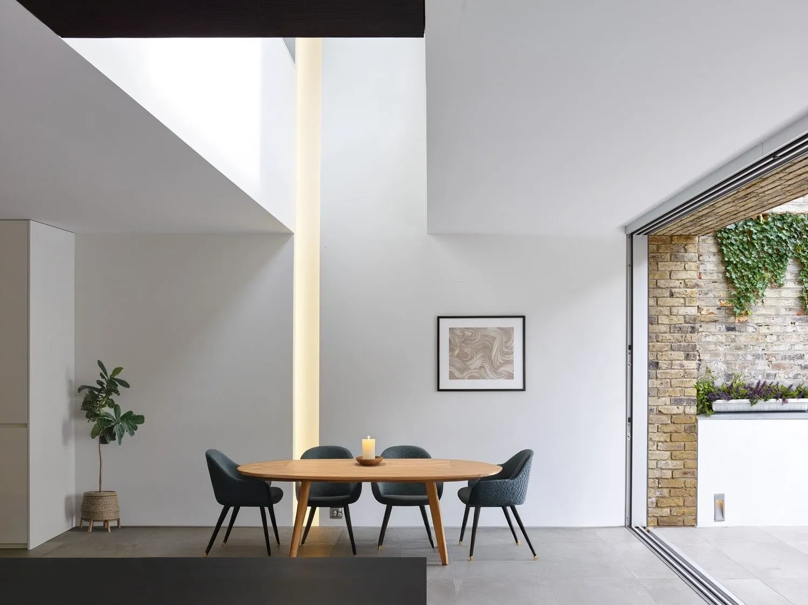
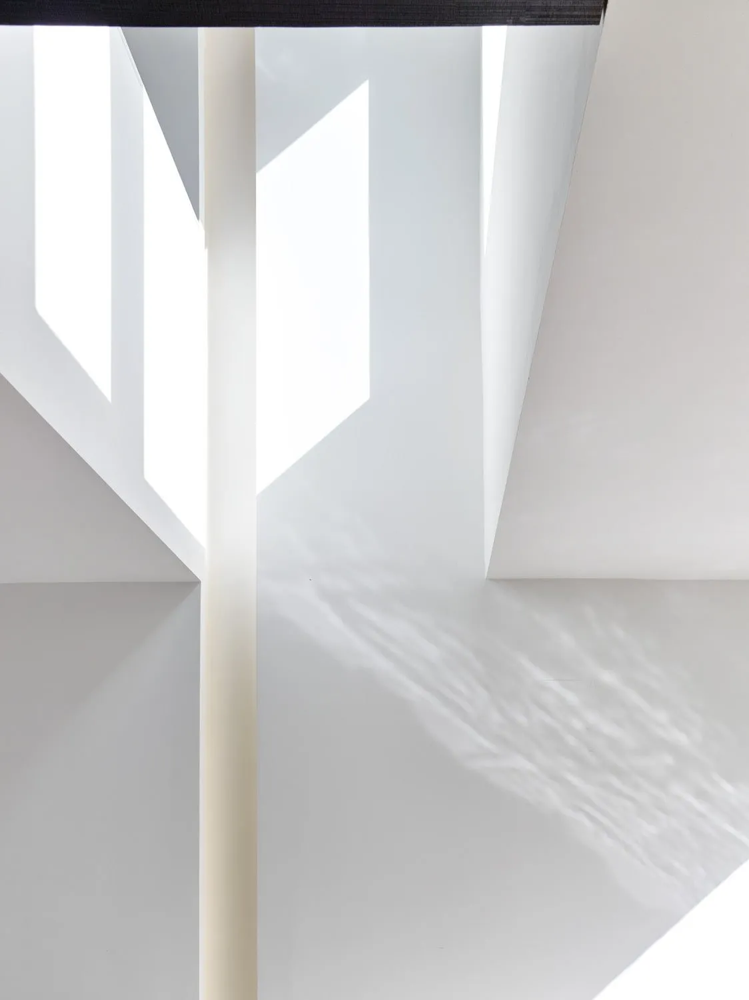
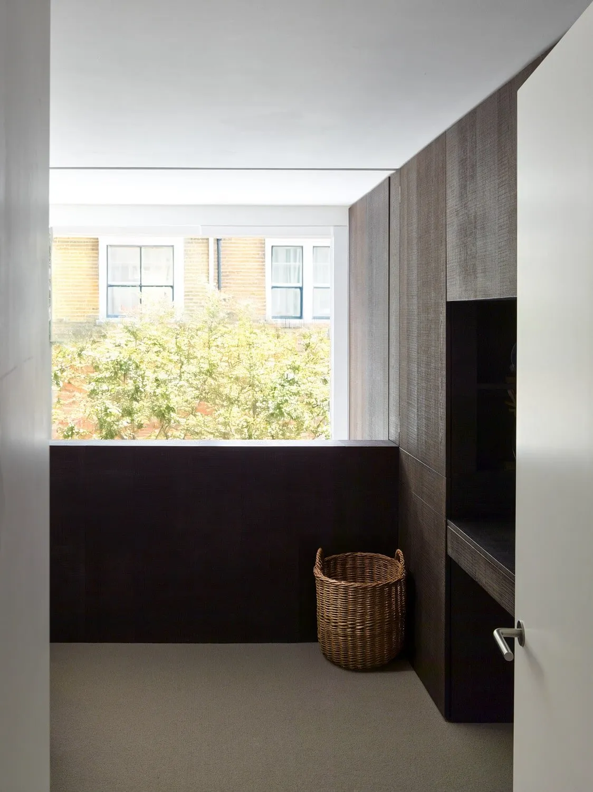

Capablanca House
A four-bedroom Barnsbury home, extended and refurbished around a double-height office over the kitchen and a palette of white joinery and dark-stained oak.
White and dark, paired.
Named after the chess master, the house plays with paired contrasts: white joinery against dark-stained oak, opaque rooms next to glazed ones. The clients wanted a four-bedroom home with a ground floor where the kitchen, living room and a home office could talk to each other.
The plan opens up the ground floor and pulls a double-height void over the kitchen so the upstairs office can read down into it. South light reaches deep into the house. Slim aluminium sliding doors run along the rear elevation and connect the main rooms to a wild garden and terrace.
Most of the rest of the house was reworked alongside the extension — bedrooms above, bathrooms reconfigured — so the whole place reads as one move rather than an addition.


"White joinery against dark oak. Open against closed. The plan plays in pairs."
Studio
What it's made of.